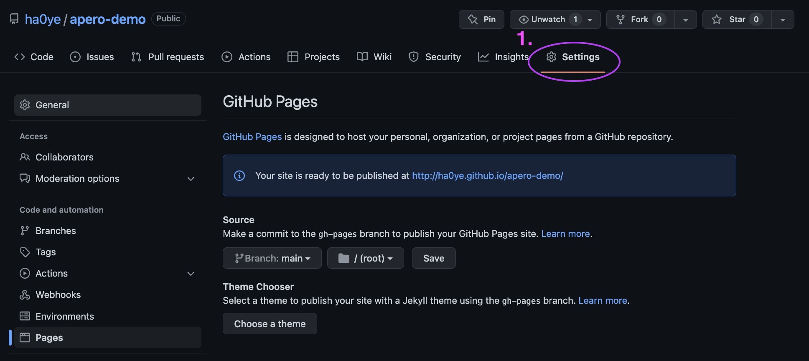
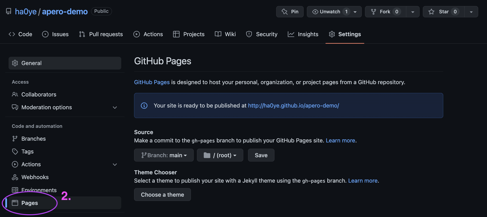
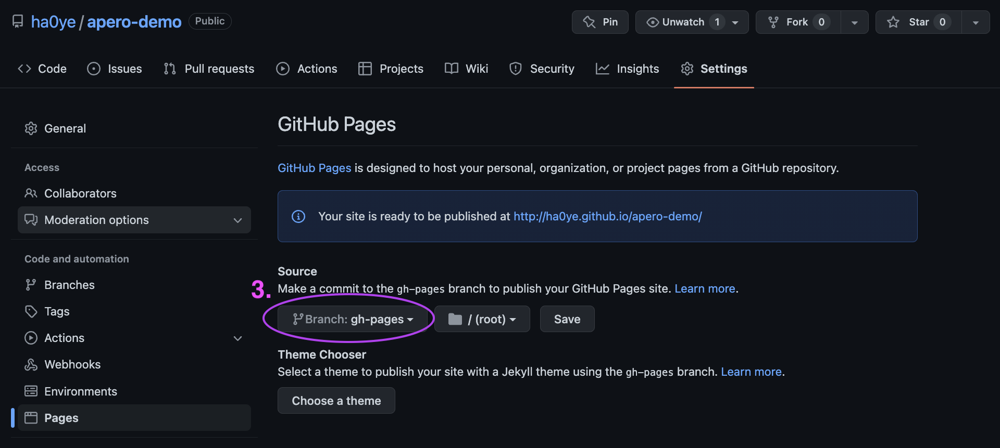

Hao Ye Health Science Center Libraries, University of Florida (updated: 2022-07-11)
Required Packages
These packages and their included dependencies will have all the tools that we need to get started.
Git and RStudio RStudio is not required, but does make some steps easier, so I strongly recommend it. If you have not yet configured Git and GitHub for use from within RStudio, check out these guides:
Install Hugo Hugo is a static site generator that we will use. This code from the blogdown package will install the latest version and make it available to us.
blogdown::install_hugo()Choose a name We are going to use GitHub Pages to host our website. The address will be https://{username}.github.io/{repo} e.g for my username ha0ye and repo my-site, the eventual website address will be https://ha0ye.github.io/my-site/ You can also host at https://{username}.github.io/ ; choose {username}.github.io as the repo name.
New RStudio Project
File -> New Project
New Directory
Create Project.Create Blogdown Site
blogdown::new_site(theme = "hugo-apero/hugo-apero",
format = "toml",
sample = FALSE,
empty_dirs = TRUE)Set baseURL Open config.toml. There are a number of configuration options here. Right now, set baseURL to the eventual URL of your site. For example:
baseURL = "https://ha0ye.github.io/blogdown-demo"Activate renv The renv package will capture all the needed packages to build our website and record this information in configuration files that GitHub will use.
renv::init()Setup GitHub Actions We need to give GitHub instructions on how to build our website, and there is a premade script for us to use.
usethis::use_github_action("blogdown")Commit and Push These commands will enable Git for this project, and then push it to a new repo on GitHub.
usethis::use_git()
usethis::use_github()Demo
Hugo Hugo is a static site generator. (there are many other applications that do similar things) It combines your content with a set of theme/style files to create a static HTML webpage. You can create content in markdown, and not worry about styling.
Blogdown The {{blogdown}} package combines R Markdown and Hugo.
Blogdown Preview In your website project, you can preview the webpage with
blogdown::serve_site()GitHub Pages GitHub Pages will host websites from github repos for you, in the github.io domain. GitHub Pages can also render using Jekyll, but we are ignoring it for now. For GitHub Pages to work, we need to specify where the website files are. We choose the gh-pages branch, where only the rendered web files will be stored.
GitHub Pages Configuration In the GitHub page, navigate to “Settings” 
GitHub Pages Configuration then select “Pages” 
GitHub Pages Configuration then select the “gh-pages” branch as the source and click “Save”. 
GitHub Actions GitHub Actions lets us do workflow automation on GitHub. Our provided script will setup an R environment to build our website, and then put the website files into the gh-pages branch. This means, when we update the contents in GitHub, it will render and update the website automatically.
Workflow Suggested website workflow:
blogdown::serve_site()